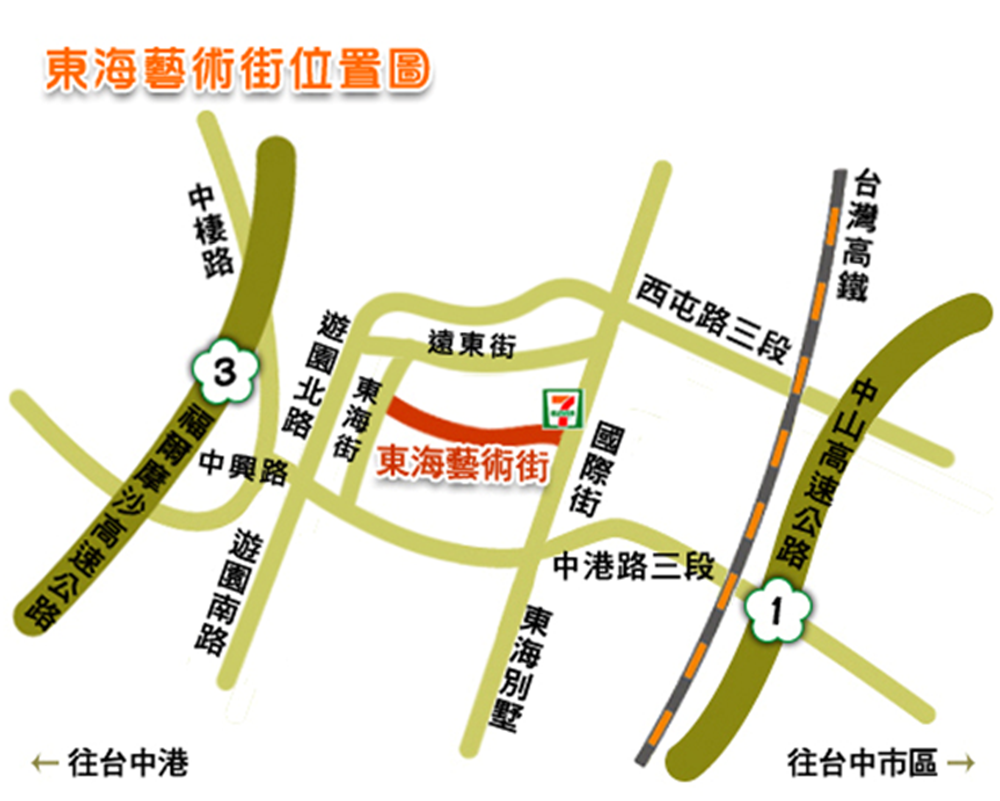
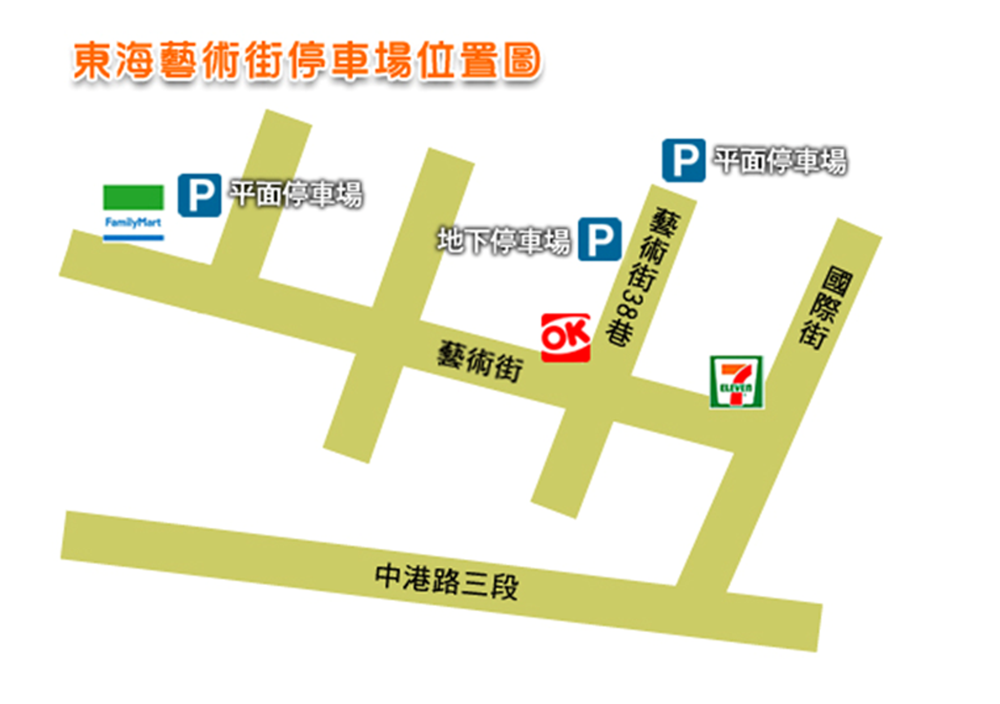
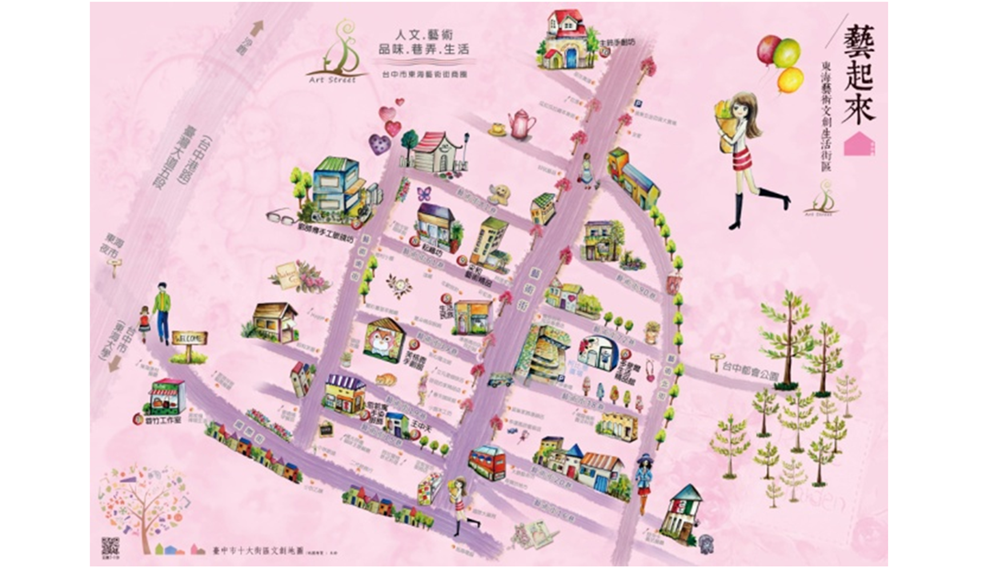

來去東海(交通指引與停車場位置)

自行開車【GPS衛星定位】N24.18796° Ｅ120.59325° (可參考首頁 Google)
1.一高 → 從中港交流道下，往沙鹿的方向，國際街右轉，看到seven左轉，即可抵達。
2.二高→ 從龍井交流道下，往台中的方向，國際街左轉，看到seven左轉，即可抵達。
台灣高鐵 搭高鐵到台中烏日站下車 在高鐵烏日站六號出口，有免費接駁車到東海大學，下車後，可以步行至藝術街，約10分鐘。
大眾運輸工具 1. 臺中快捷巴士BRT搭至東海別墅站 2. 巨業客運169號搭至東海別墅站 3. 台中客運146公車下車地點離東海藝術街最近，可搭至東海遠東一街
停車場位置 地下停車場每次60元 平面停車場每次50元
http://www.tunghai-art.com.tw/index.php?module=intro&mn=5
台灣高鐵 搭高鐵到台中烏日站下車 在高鐵烏日站六號出口，有免費接駁車到東海大學，下車後，可以步行至藝術街，約10分鐘。
大眾運輸工具 1. 臺中快捷巴士BRT搭至東海別墅站 2. 巨業客運169號搭至東海別墅站 3. 台中客運146公車下車地點離東海藝術街最近，可搭至東海遠東一街
停車場位置 地下停車場每次60元 平面停車場每次50元
http://www.tunghai-art.com.tw/index.php?module=intro&mn=5

